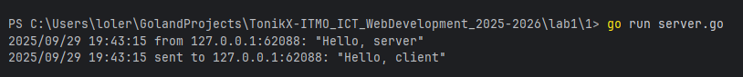
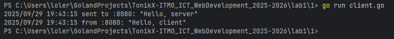

Задание 1: UDP-клиент и сервер
Условие
Реализовать клиентскую и серверную часть приложения.
Клиент отправляет серверу сообщение «Hello, server», и оно должно отобразиться на стороне сервера.
В ответ сервер отправляет клиенту сообщение «Hello, client», которое должно отобразиться у клиента.
Требования:
- Использовать библиотеку
socket. - Реализовать с помощью протокола UDP.
Код программы
Сервер (server.go)
package main
import (
"context"
"flag"
"log"
"net"
"os"
"os/signal"
"syscall"
"time"
)
const defaultUDPAddr = ":8080"
func main() {
server := flag.String("server", defaultUDPAddr, "UDP server address host:port")
flag.Parse()
udpAddr, err := net.ResolveUDPAddr("udp", *server)
if err != nil {
log.Fatalf("resolve addr: %v", err)
}
conn, err := net.ListenUDP("udp", udpAddr)
if err != nil {
log.Fatalf("listen udp: %v", err)
}
defer func(conn *net.UDPConn) {
err := conn.Close()
if err != nil {
log.Printf("close udp: %v", err)
}
}(conn)
ctx, stop := signal.NotifyContext(context.Background(), os.Interrupt, syscall.SIGTERM)
defer stop()
go func() {
for {
select {
case <-ctx.Done():
return
default:
}
_ = conn.SetReadDeadline(time.Now().Add(2 * time.Second))
buf := make([]byte, 1024)
n, clientAddr, err := conn.ReadFromUDP(buf)
if ne, ok := err.(net.Error); ok && ne.Timeout() {
continue
}
if err != nil {
if ctx.Err() != nil {
return
}
log.Printf("read error: %v", err)
continue
}
msg := string(buf[:n])
log.Printf("from %s: %q", clientAddr.String(), msg)
reply := []byte("Hello, client")
if _, err := conn.WriteToUDP(reply, clientAddr); err != nil {
log.Printf("write error to %s: %v", clientAddr.String(), err)
}
log.Printf("sent to %s: %q\n", clientAddr.String(), string(reply))
}
}()
<-ctx.Done()
log.Println("shutting down…")
}
Клиент (client.go)
package main
import (
"flag"
"log"
"net"
"time"
)
const (
defaultServerAddress = ":8080"
defaultTimeout = 3 * time.Second
)
func main() {
server := flag.String("server", defaultServerAddress, "UDP server address host:port")
timeout := flag.Duration("timeout", defaultTimeout, "read timeout")
flag.Parse()
raddr, err := net.ResolveUDPAddr("udp", *server)
if err != nil {
log.Fatalf("resolve server addr: %v", err)
}
conn, err := net.DialUDP("udp", nil, raddr)
if err != nil {
log.Fatalf("dial udp: %v", err)
}
defer func(conn *net.UDPConn) {
err := conn.Close()
if err != nil {
log.Printf("close udp: %v", err)
}
}(conn)
payload := []byte("Hello, server")
if _, err := conn.Write(payload); err != nil {
log.Fatalf("send: %v", err)
}
log.Printf("sent to %s: %q\n", raddr.String(), string(payload))
if err := conn.SetReadDeadline(time.Now().Add(*timeout)); err != nil {
log.Fatalf("set deadline: %v", err)
}
buf := make([]byte, 1024)
n, err := conn.Read(buf)
if err != nil {
log.Fatalf("recv: %v", err)
}
log.Printf("from %s: %q", raddr.String(), string(buf[:n]))
}
Запуск
- Необходимо открыть два терминала.
- В первом запустите сервер:
go run server.go - Во втором терминале запустите клиент:
go run client.go
Результат
Cо стороны сервера видим следующее:

Cо стороны клиента видим:

Значит, цели задания выполнены.
Выводы
- Было реализовано простое взаимодействие между клиентом и сервером через UDP-соединение.
- Сообщения корректно передаются и отображаются с обеих сторон.
- Использован минимальный, но достаточный набор функций библиотеки
socket.